Cracked caulk, stained grout, dull marble, tired tile — three generations of hands-on craft that make the surfaces you already own look new again. No demolition, no guesswork, no upsell.
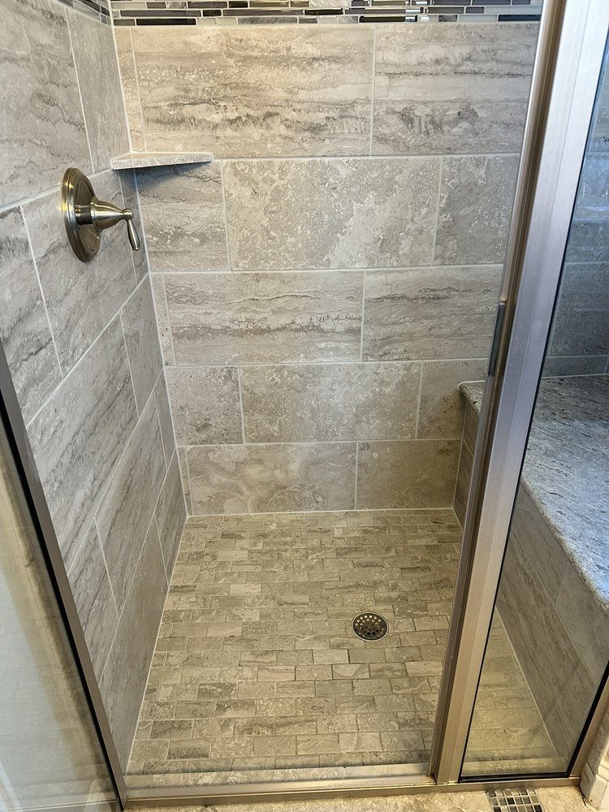
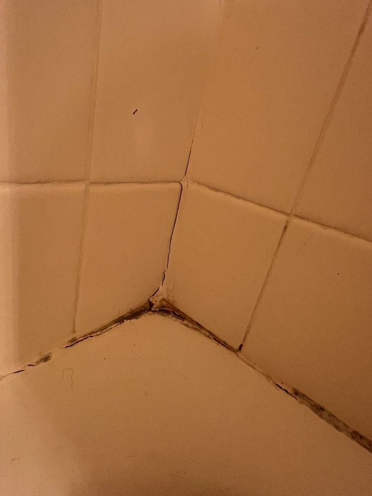
BeforeSmart Grout & Stone Restoration has been a family-owned trade since 1995. Savalas Lindsey and his crew treat every home like their own — shoe covers on, workspace kept clean, and the honest answer about what your surfaces actually need. Often that means saving the stone you have instead of tearing it out.
From a single shower corner to whole-home tile, marble, and granite, the goal is the same: results that look like new — at a fair price, done right the first time.
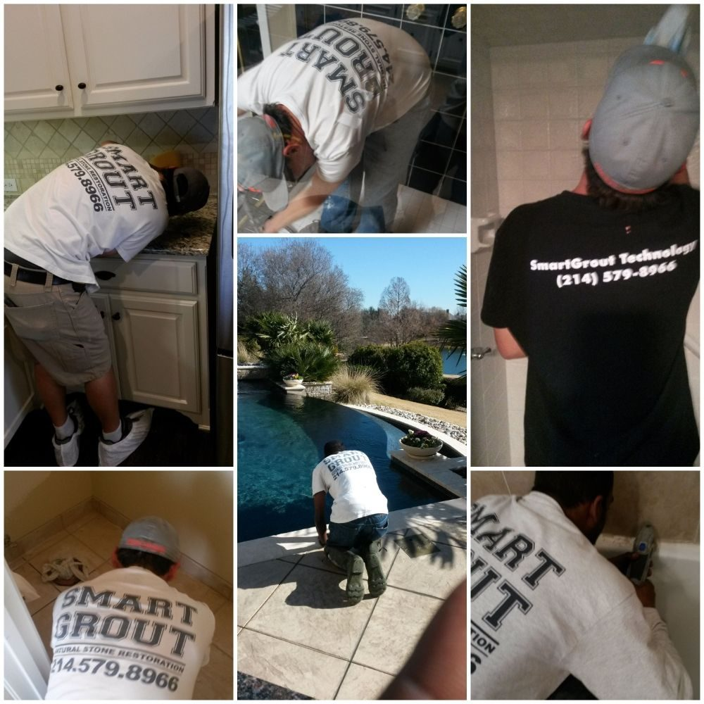
Tile, grout, and natural stone are all we do — which is exactly why we do them so well.
Deep-clean years of buildup, then seal so it stays bright. The single biggest before-and-after in the house.
Cracked, mildewed, or missing grout and caulk removed and replaced — sealing out the moisture that started it.
Uneven, stained, or dated grout brought to one clean, uniform color — sealed in the same pass.
Etched, dull, or stained marble, travertine, and slate honed and polished back to a natural shine.
Kitchen and bath granite deep-cleaned and re-sealed so it resists stains and keeps its depth.
Granite, marble, quartz, and more refinished and re-sealed — including sink re-set and re-seaming.
Not sure which you need? Call (214) 579-8966 — we’ll tell you honestly.
A real North Texas saltillo-tile kitchen we brought back to life. Drag the handle — left is the day we arrived, right is the day we left.
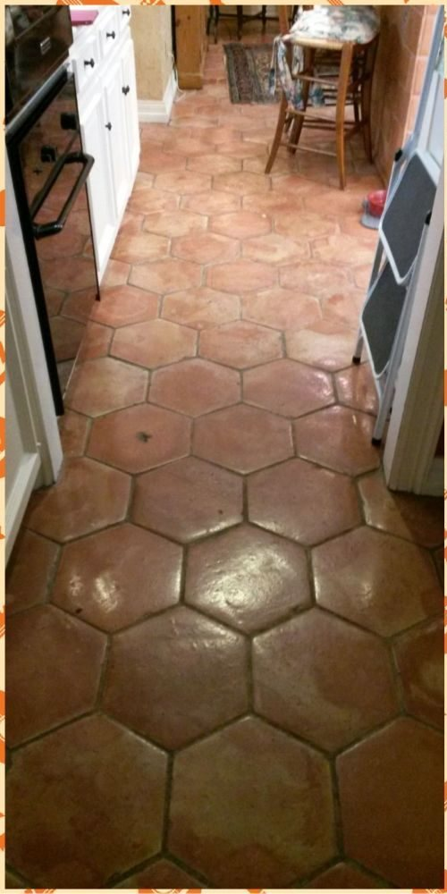
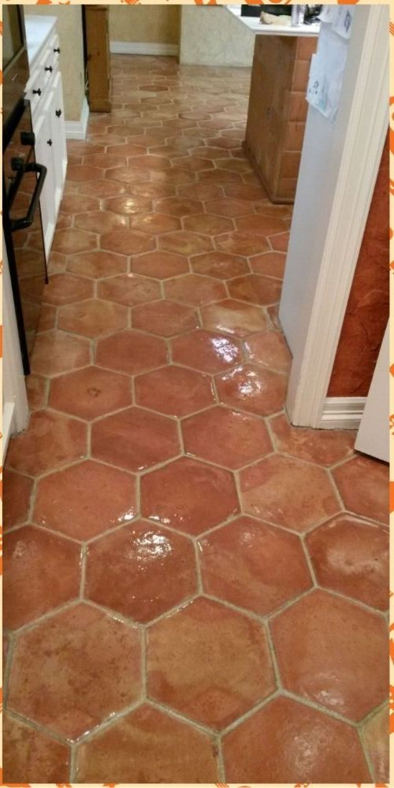
Real work by Smart Grout & Stone Restoration · saltillo floor, Frisco-area home
Every photo here is real work from real North Texas homes — marble, granite, travertine, tile, and grout.
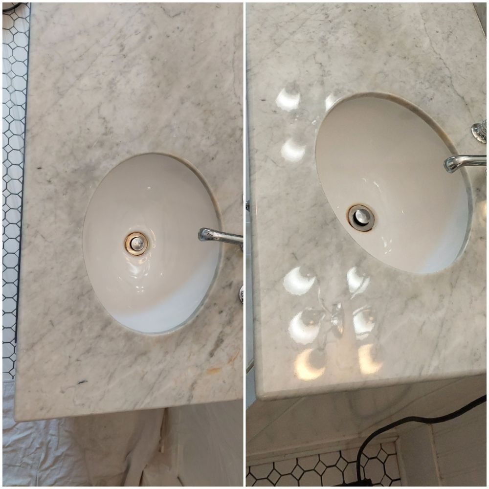
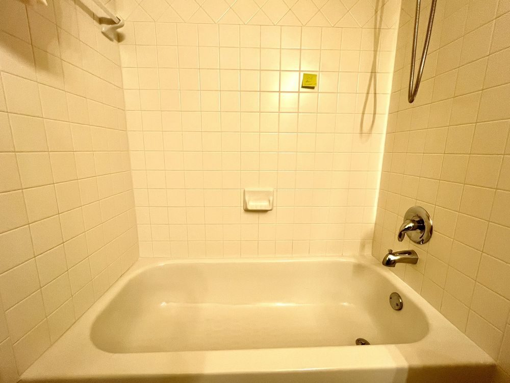
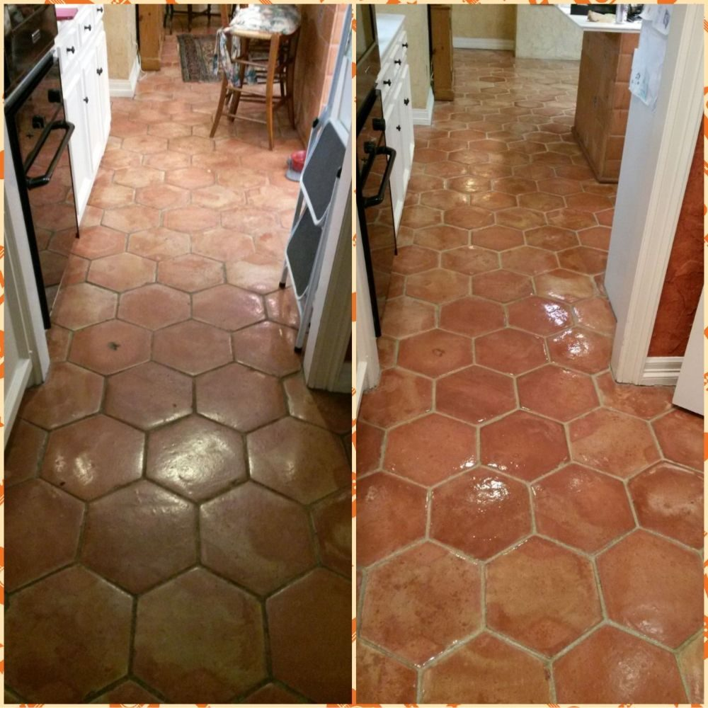
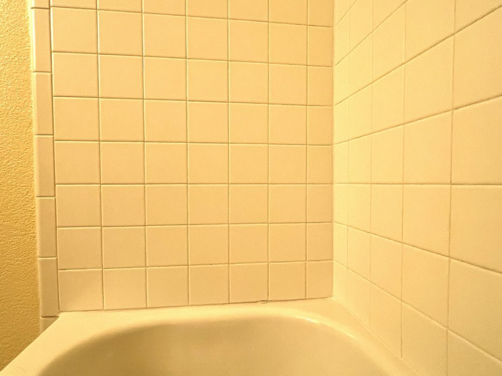
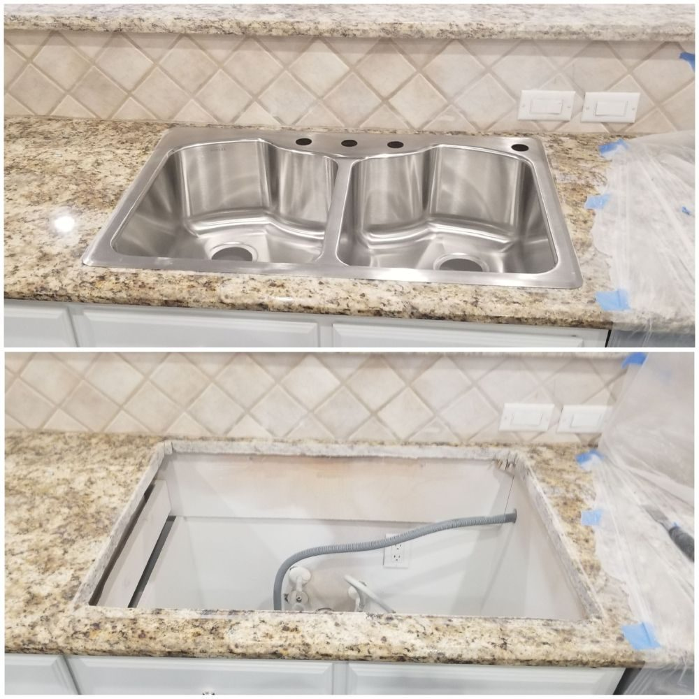
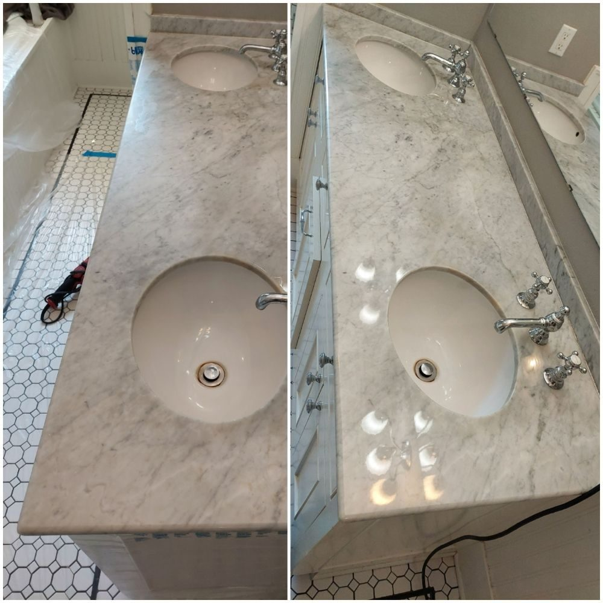
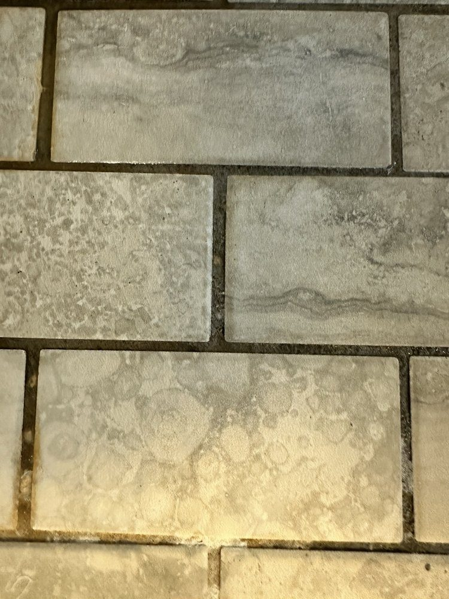
“Savalas is a craftsman, and even among the 5-star rated people here, that’s rare. Punctual, polite, honest, and upfront — fairly priced, and he fixed what others wouldn’t touch.”
“We thought we’d have to rip out the whole master shower. He showed us how to remove the stains in our natural stone instead — saved us tens of thousands. The shower looks brand new.”
“A full restoration of the grout and caulking in my shower. Reasonable cost, superb result — beyond my expectations. It looks like a brand-new shower. Finally, a reliable company I can call on.”
“Savalas and Anthony were a great team and offered a fair price. Awesome experience — timely, efficient, precise. We posted a request and the job was done in less than 24 hours. An artist in his craft.”
“Professional, friendly, efficient, and kept everything clean. They even cleaned and sealed our kitchen tile grout and granite counters. Excellent work, fair pricing — highly recommend.”
“Savalas did a great job. He was thorough, reasonable, and professional. I highly recommend him and his company.”
We come to you — homes and businesses across Frisco and the greater DFW metro. Every job starts with an honest, no-pressure estimate.
Send us a photo or just call. We’ll give you an honest estimate and a plan to make your grout, tile, and stone look new again.